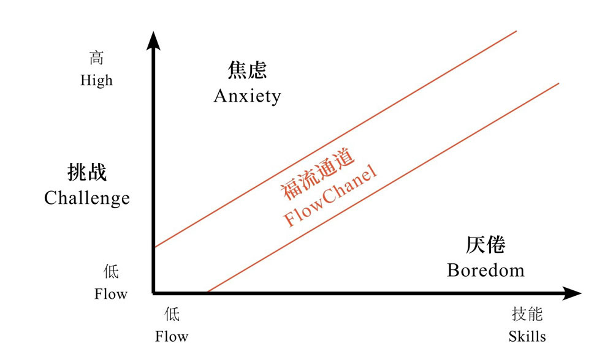
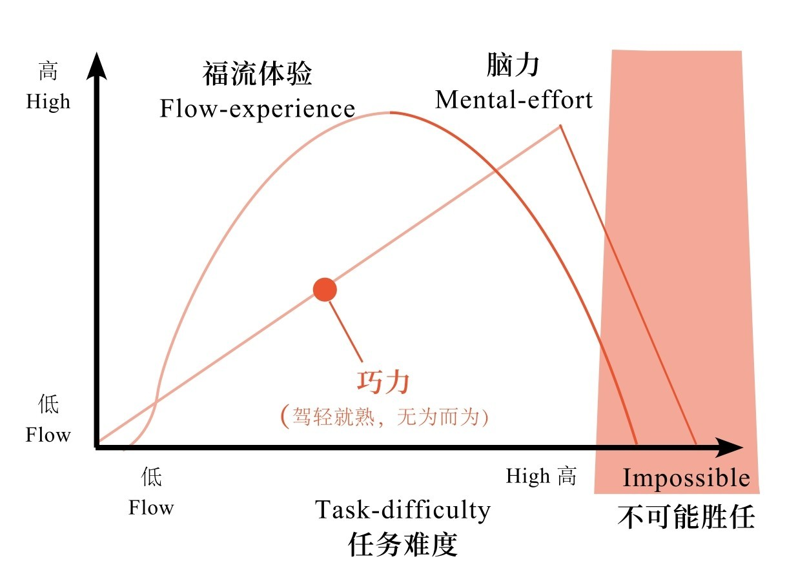

什么是心流？
作者：知乎盐选心理
心理能量上，有一个「黄金分割点」： 不折腾，闲得慌，空虚无聊；太折腾，累得慌，即便达到完美也难以抵消心理的倦怠和疲乏。唯有在福流（flow，也译作心流）中，能量投入回报率是最高、最省力的。
福流理论告诉我们，现实的幸福不是不折腾，而是有方法、有巧力、有乐趣地折腾。
必须达到心理能量上的「黄金分割点」：不折腾，闲得慌，空虚无聊；太折腾，累得慌，即便达到完美也难以抵消心理的倦怠和疲乏。唯有在福流中，能量投入回报率是最高、最省力的。
每当看到某些「教人幸福」的书籍或网站上展示着一张张灿烂无限的笑脸时，我的心中都会蹦出俩字：太假。如果我们孜孜以求的幸福就是开怀大笑，那人生注定是个悲剧——除了傻子，谁能做到一直开怀大笑呢？再说，事事开心、样样顺遂的生活，不无聊么？
如果你赞同我，那么问题来了，现实的幸福究竟是个什么样子？有没有一种幸福，不是像巴比伦花园一样悬在空中，而是可以扎根生活的土壤开花结果？
答案是肯定的。
在积极心理学中，关于幸福基本上存在两种论调：享乐论（Hedonic）和现实论（Eudimonia）。享乐论的幸福就像是那张「展示幸福」的笑脸，关乎愉悦和满足感；而现实论的幸福则未必是笑容洋溢，它侧重于意义、成长和自我实现。如果说享乐论的幸福属于那些天生爱笑的外向者，或是某些得到奖赏的短暂瞬间，那么现实论的幸福则属于每一个人的每时每刻。
有一个理论，可以说是现实论幸福的典范，它的名字叫作「福流」。
福流（Flow，曾译为「心流」，后由彭凯平教授正名为「福流」）是积极心理学开创者之一米哈伊·契克森米哈伊（Mihaly Csikszentmihalyi），在 20 世纪 70 年代提出的一个幸福概念，它指的是人们在行动或创造时，那种全神贯注、乐在其中的心理现象。自 1990 年，关于福流的第一部专著出版以来，这个话题已得到全世界的追捧和热议。四年前，我开始跟随米哈伊教授学习福流，并有机会对它做深入的研究和思考。许多人觉得这是个高深莫测的学术概念，可我倒觉得它非常接地气，为我们在俗世中寻找幸福，指引了道路。这条道路简单来说就是两个词——折腾和乐趣。
幸福在于折腾
生命不息，折腾不止。回顾人生历程，你不可否认，开怀大笑、安逸闲适的时光终究短暂，大部分时候，我们不是在折腾，就是在去折腾的路上。
上学、工作、成家立业、养儿育女、柴米油盐、生老病死……没有一样不折腾。不仅如此，你还要抵挡生活中各种内忧外患的威胁和折磨。内有来自身心的欲望和需求，外有来自文化、社会的制约及自然环境的灾难，教人始终不得解放，随时可能陷入混乱。
似乎唯有安住在福流中，才是自在清明的，但福流中的人看起来同样是折腾不歇。他可能会持续从事某项活动，开创某个事业，不分昼夜废寝忘食去应对级别不断升高的挑战。而且，福流只会出现在一条狭窄的「通道」里（如图 1），挑战的难度须刚好是技能所能及的，明确的目标与即时反馈也不能少，必须调用所有意识向挑战进发。一旦微妙的平衡被打破，你就被排除在福流「通道」之外，陷入其他低效的状况里，要么百无聊赖，要么焦虑惶恐。
图 1 经典福流模型——福流通道
在折腾中「见猎心喜」
既然如此，福流之中，幸福究竟在哪里？
「子非鱼，焉知鱼之乐？」在福流里折腾的「弄潮儿」自己看来，折腾是一种无与伦比的乐趣。正因为挑战与技能相匹配，会产生一种「见猎心喜」的冲动，明确的目标与即时的反馈，让一切尽在掌握，高度的专注与娴熟的技能，使行动酣畅自如。在持续进行的行动中，他们获得巨大的乐趣，以至于浑然忘我，不知身在何处，不知今夕何夕，更不知饥饿乏困。
这挑战的乐趣和物我两忘的境界，已然是最大的回报，别无他求，偏偏还收获了一系列有益的副产品——技能提升，成效卓越，信心爆棚，满心欢喜。
这就是福流的幸福，不是愉悦，而是乐趣。米哈伊在他的书中特别区分了愉悦和乐趣的差异：愉悦是被动地接受外界提供的感官享受，比如看电影、吃美食，而乐趣必定是主动出击的结果。任何有乐趣的事都少不了折腾——挑战、学习、成长。
换言之，待着、闲着是没法获得乐趣的。
这在孩子身上体现得最为明显。就像是羽翼渐丰的幼鸟，向往在空中自由翱翔一样，尚在蹒跚学步的孩子，渴望能在地上无拘无束地奔跑。那股成长的力量势不可挡，哪怕东倒西歪，跌无数跟头都不在乎，依然兴冲冲地推开大人的手，继续尝试，屡败屡战。就在这跌跌撞撞的乐趣中，他终于学会了走路。然后，他又连忙投入到其他乐趣当中，比如试着把积木搭得越来越高，或是把皮球一遍又一遍地投向篮筐，每一次有乐趣的经历都是满满的福流，也预示着最快速的成长。追求乐趣本就是人的天性，但现在许多成年人的价值观成了追求享清闲，其实是远离了人的天性，因此也很少能真正感受到幸福。
寻找折腾和幸福的「最大公约数」
福流理论告诉我们，现实的幸福不是不折腾，而是有方法、有巧力、有乐趣地折腾。必须达到心理能量上的「黄金分割点」：不折腾，闲得慌，空虚无聊；太折腾，累得慌，即便达到完美也难以抵消心理的倦怠和疲乏。唯有在福流中，能量投入回报率是最高、最省力的。
研究发现，「福流中的人」焦虑水平适中，大脑前额皮质（主要消耗心理能量的部分）活跃度较低，因此付出的脑力也会相对较少；而同时，福流体验中高度集中和有序的意识带来效率最大化，由此达到事半功倍、四两拨千斤的效果（如图 2）。这种驾轻就熟、高效使用能量的经验，自然给人带来巨大的获得感和幸福感。由此可见，福流这个西方心理学理论，其实折射出我们东方传统道家的学说「无为而为」的大智慧。
图 2 福流、脑力与任务难度之间的关系模型
如此现实、省力、高效且有获得感的幸福，究竟如何才能达到呢？
我在网上看过不少这方面的讨论，基本上围绕福流产生的条件和特点，「术」大于「道」。
其实，要实现福流之「道」，依我看还是要去把握「折腾」和「乐趣」这两件事——去寻找两者的「最大公约数」。
说得通俗点：第一，折腾有乐趣的事；第二，把折腾变成乐趣。
折腾有乐趣的事
首先，你要去发现什么事情对自己而言是有乐趣的。这里的「乐趣」可以是主观的，也可以是客观的。
主观上的乐趣因人而异。比如，有人可以在图书馆查一整天学术文献，看得津津有味，有人却一分钟也看不下去。有人和小伙伴出去打篮球，打到天黑忘记回家吃饭，而有人却打十分钟就腻了。
主观上认为有乐趣的事，必定关乎各人的热情、优势和人生追求。也就是那些让你发自内心渴望去做，非常看重，即便没有外部回报也心甘情愿去做的事，心理学称之为「内在动力」（Intrinsic Motivation）。这种由内而外的力量是活出生命价值的原动力，也是福流的核心要素。
客观上的乐趣，来自于一些特定的活动。它们本身的设计就非常符合福流的结构特点：具有挑战性，有提升空间，规则明确，反馈及时，因此任何人都比较容易从中找到乐趣。最典型的例子就是游戏。
我小时候玩的第一个电子游戏是俄罗斯方块，这个永远不会赢的简单小游戏，却有着无穷的魅力，让人想要不断突破自己反应速度的极限，冲过一关又一关。
理论上来讲，所有的游戏、竞技类活动、体育运动、文化艺术活动都具有这样的福流特征，比如打麻将、跳广场舞、冲浪、过年包饺子等等。生活中吸引人的事物，也都是依照福流活动的结构特点设计出来的，比如，让人欲罢不能的朋友圈和购物网店，以及让人爱上运动的计步手环。
提醒，除非你的人生目标与这些客观上有乐趣的活动高度一致，比如为了成为网游世界冠军，而废寝忘食地打网游。否则，当你用大量时间做这些事，以至于忽略了其他更重要的目标时，走出福流，感到的不是成就和满足，而是空虚和自责，那样就一点乐趣都没有了。
把折腾变成乐趣
福流之道的更高境界，是把折腾变成乐趣。不依赖事情本身的吸引力，而是更多地调动主动性，在艰难、枯燥、痛苦、甚至丧失的时候，依然能够创造福流。
我曾观察过两名在不同医院工作的清洁工阿姨。一个每天例行公事，工作时偷偷在楼道里抽烟，时常与其他清洁工发生口角——为谁多洗了一次拖把、谁早走了两分钟这样的小事。
而另一位阿姨却很不一样，每天早上，她会热情地走进病房，拉开窗帘，向每一位病人问好，并主动给她们打开水。干活时麻利且自信，休息时陪病人聊天，关心他们的病情，甚至去做些分外的事，比如，帮病人打饭，给病人家属带路等。两个阿姨职业相同，都是枯燥而卑微的工作，后者却令许多工作体面的人肃然起敬。她的福流体验令人羡慕。为什么会这样呢？因为她从自己平凡的工作中找到了乐趣，这种乐趣来自于与病人的连接。
人的一生有将近三分之一的时间，都在工作中度过。然而不是每个人都那么幸运，能以自己爱好的事情为专业和职业，但是这位清洁工阿姨的事例告诉我们，我们完全有可能「干一行，爱一行」。
根据积极组织行为学中「工作重塑」（Job Crafting）方法，我们可以发挥自主性，让自己的工作内容、方式以及活动都按照福流的规则来进行重新设计，使之更具乐趣和吸引力。许多人会抱怨工作枯燥、无聊，每天从上班开始就在等着盼着下班，不知要浪费多少时光和生命。从折腾到乐趣，也许只需一些主动的、小小的改变。
福流不仅属于那些原本就有乐趣可寻的人，它属于每一个人，甚至包括遭受最深苦难的人。即使大部分自由被剥夺，他们依然有机会选择，去看到更好的可能性，从而创造出意义感和意识的秩序，在痛苦之中尝到乐趣的滋味。
维也纳精神医学家维克多·弗兰克尔，曾在纳粹集中营中度过漫长的牢狱生涯，目睹许多狱友在绝望和混乱中自杀，但他却在那样惨绝人寰的环境中，依然保有幽默感，并帮助自己及身边的人找到活下去的意义。当他走出集中营之后，写下了著名的《追寻生命的意义》一书，并开创了「意义治疗法」。他在集中营里的日子，很难说是幸福的，但或许那已经是他在当时所能选择的最理想、最有质量、最有福流的度过方式。
别闲着，尽管去折腾
可以说，福流打破了「苦尽甘来、乐极生悲」的怪圈，让过程和结果都可以是甜的，是乐的。它不仅仅让人在幸福中主动创造，而且让人在空虚时不无聊，在艰难时不苦闷，在失去时不绝望。
现在你应该懂得，在幸福的表情包里，绝不是只有阳光下灿烂的笑脸，还应有浑然忘我的专注，志在必得的笃定，激流勇进的乐趣，大功告成的酣畅。漫漫人生路，真正衡量我们生命质量的，不是笑容的弧度，而是专注的深度；不是财富的多寡，而是我们如何度过生命的整个历程——是在浑浑噩噩、焦虑不安之中，还是在满满的福流之中？
而我们的福流如何实现呢？别闲着，尽管去折腾。但是也别忘了问问自己：我体验到其中的乐趣了吗？如果没有，就去把乐趣找回来吧！
想拥有一棵开花的树，如果不知运用自然之力，就算费尽心机，装点枝叶和花朵，也只能制作一棵逼真的死树。如果懂得运用自然之力，只需轻松地播下一颗种子，便可繁花似锦，枝叶葱茏。创造繁盛的人生亦是如此。福流就是一枚深埋在现实挑战中的幸福种子，若你给予合适的阳光雨露，它就会生根发芽，开花结果。